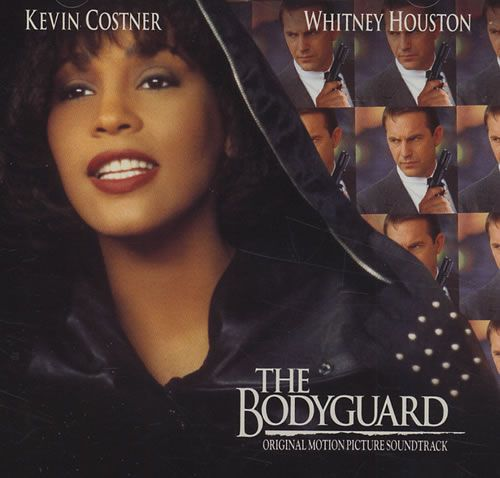

Top 5 Mejores Canciones Pop de la Historia
"I Will Always Love You" - Whitney Houston

Fecha de Publicación: 1992
Artista: Whitney Houston
Reseña: Esta balada poderosa de Whitney Houston, lanzada en 1992 como parte de la banda sonora de la película "The Bodyguard", se convirtió rápidamente en un himno de amor y perdón. La interpretación emocional de Houston y su impresionante rango vocal la han convertido en una de las canciones más memorables de la historia.